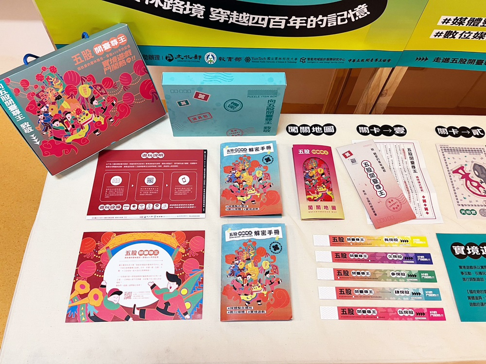

五股開臺尊王的足跡
雲科大的智能地域設計服務研究中心深入雲嘉地區， 長期投入「五股開臺尊王過爐」這項縣定民俗的調查。
透過田野調查、影像紀錄與設計轉譯，師生們將百年的信仰儀式轉化為繪本與展覽， 讓這份屬於雲林人的集體記憶，能夠以更生動的方式傳承給下一代。
我們運用設計與研究的力量，協助保存雲林珍貴的民俗記憶。
雲科大的智能地域設計服務研究中心深入雲嘉地區， 長期投入「五股開臺尊王過爐」這項縣定民俗的調查。
透過田野調查、影像紀錄與設計轉譯，師生們將百年的信仰儀式轉化為繪本與展覽， 讓這份屬於雲林人的集體記憶，能夠以更生動的方式傳承給下一代。
在「斗六舊城文化保存」計畫中，我們穿梭在老街與巷弄間， 蒐集舊城的歷史碎片。透過數位技術修復老照片、重繪舊地圖， 試圖在現代化的城市紋理中，找回老斗六的靈魂。
2013 年，一群雲科大設計學院的師生放下了手中的滑鼠與繪圖板，拿起了油漆刷，走進了斗六市八德社區。這不是一次單純的作業，而是一場關於「找回在地記憶」的行動。
在那段日子裡，社區的巷弄變成了最大的畫布。學生們蹲在路邊，聽著社區裡的阿公阿嬤講述過去的故事：哪裡的稻浪最美、哪種鳥類最常駐足、以前的孩子都在哪棵樹下玩耍。這些口述的歷史，透過設計系的轉化，變成了牆上一幅幅生動的景觀彩繪。
當灰白的圍牆染上了色彩，被喚醒的不只是視覺的驚艷，更是居民對土地的情感。原本匆匆經過的路人開始駐足，害羞的長輩開始指著牆面驕傲地向孫子介紹：「這是我們以前的生活喔！，這項計畫證明了，設計不只存在於美術館，更存在於我們生活的每一個轉角。藝術，成為了連結跨世代情感與凝聚社區向心力最溫柔的橋樑。
從校園出發，我們將「記憶」與「韌性」的種子播撒到更遠的地方。

🌱 從校園出發：
設計學院的師生團隊。他們相信藝術沒有圍牆，設計美感可以感化人心。 他們帶著畫筆與教材，走向那個一般人不會去的地方。
🌳 到更遠的地方：
地點：雲林第二監獄。
行動：「監獄文創技藝班」。
成果：這顆種子在鐵窗內發芽。學生教導收容人製作花燈、工藝品，讓他們在創作中找回自信與平靜。這不只是技藝傳授，更是用教育的種子，為受刑人鋪平未來的回歸之路。
🌱 從校園出發：
休閒運動研究所與科技研發團隊。他們開發了「零接觸檢測」與「運動科技」，原本是在實驗室裡的尖端數據。
🌳 到更遠的地方：
地點：雲林各鄉鎮的社區活動中心。
行動：「高齡健康識能與運動科技示範」。
成果：師生把儀器搬進社區，教阿公阿嬤怎麼科學運動。這顆種子讓「健康」在超高齡化的雲林落地生根，讓長輩不只是活得久，更活得有活力、有尊嚴。
無論是榮獲公立技職 USR 第一名，或是建立了 53 處 在地實踐據點， 這些數字背後只有一個意義：雲科大始終與雲林在一起。
我們是社區的夥伴、文化的記錄者，也是環境的守護者。 這就是我們對這片土地最深情的告白。